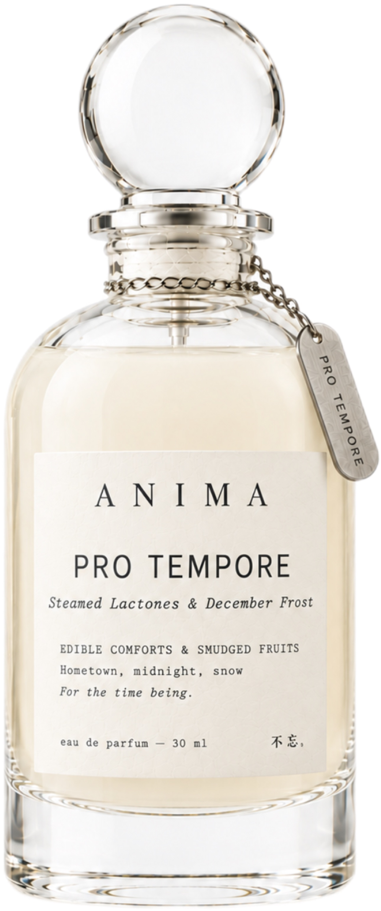
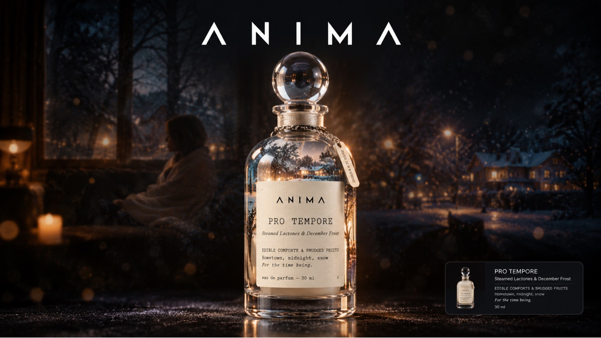

I am ten years old again the second my hands wrap around the mug. It's the old ceramic one, the one with the chip on the rim that Mum refuses to throw away, and the milk inside is steamed to that precise temperature that feels like a hug from the inside out. I sink into the sofa — the soft, sagging one in the living room of my hometown house, the one that still bears the faint ring stain from a hundred Sunday dinners — and through the window the December frost is painting its slow, white lace across the glass. The smell is lactonic and warm, sweet milk and clean cotton and something else, something that only exists in this house, in this room, on this kind of afternoon. It is the smell of being kept, of being allowed to be small again, and nothing is asked of me here. The world outside is grey and hurried; in here, time moves at the speed of a snowflake. I take a sip, and I am home.
杯子还是那只，杯口有一个小豁口，我妈说过好几次要扔，我没让。牛奶在锅里热到冒气，不能滚，滚了就老，倒进杯子里正好烫手心。我两只手捧着，从厨房走到客厅，坐下来，沙发陷下去一个坑，是我从小坐到大的那个位置。
老家的客厅不大，茶几上铺着一块勾花的白布，边角洗得发毛了。窗外在下霜，薄薄一层，贴在玻璃上，像谁用指甲刮出来的白印子。屋里很静，能听见暖气片里水流过去的声音。
牛奶的气味很淡，甜里面带一点奶腥，热的时候往上走，扑在脸上，软软的。我喝一口，烫，又放下。就这么捧着。外面灰着，冷着，赶着，我坐在这里，忽然觉得自己好像还是十几岁，放学回来，书包往地上一扔，我妈在厨房里说“先洗手”。
